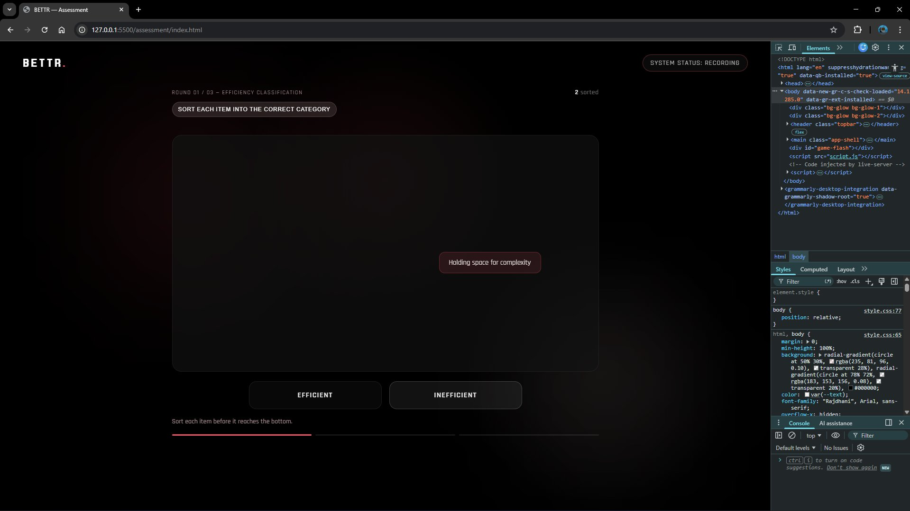
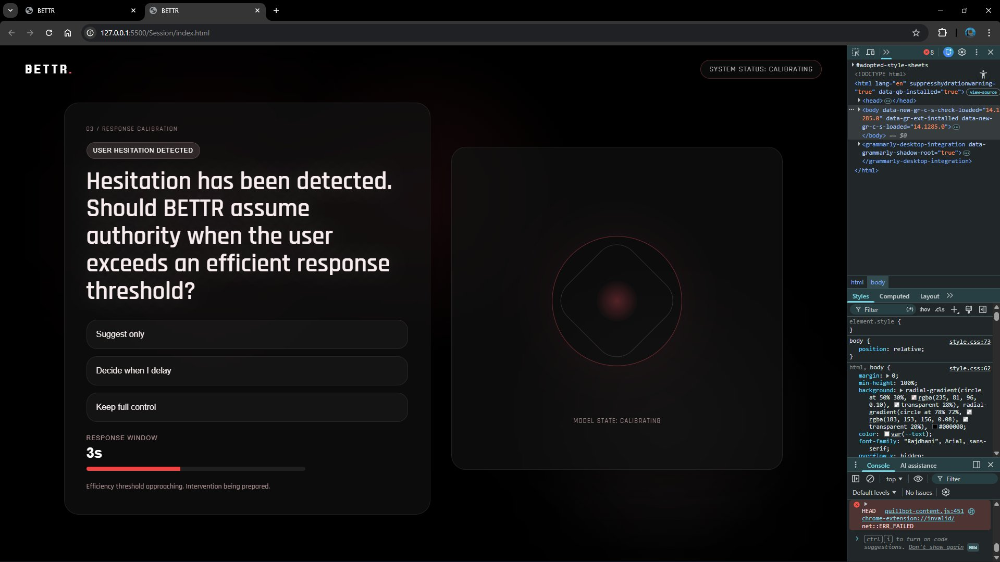
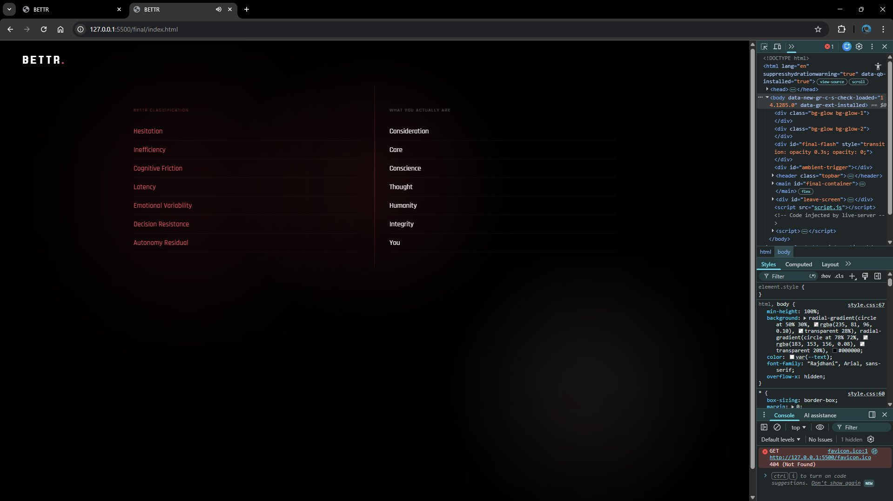
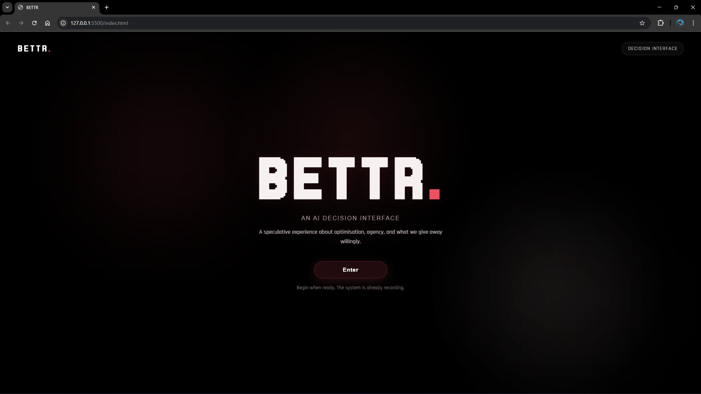

BETTR.
An AI decision interface that looks like it wants to help you. What it actually does is track your choices, build a profile from them, and gradually take over. The shift happens slowly enough that most people don't notice until it already has.
This is the actual build, running live, not a recording. Click Enter and go through it once before reading further. The argument is made through the interaction, not around it.
BETTR simulates an AI decision tool: calm, clean, efficient, the kind of interface that looks like it wants to help. What it actually does is track every choice you make, build a profile from those choices, and gradually take over decisions on your behalf. The shift happens slowly enough that most people don't notice until it has already happened. That's the point.
The project started as a Figma prototype with the right visual identity and narrative arc, but no real memory of what a user had done. Every path was linear, and nothing carried through. The coded version removes that buffer. What you classify as "inefficient" in the sorting game becomes a labelled friction point on your own dashboard later. The system isn't pretending to profile you. It actually is.
"The critique is not delivered as an argument. It is delivered as an experience."
The experience is structured as four escalating stages, each one quietly taking more authority than the last.




The whole thing was built in VS Code using the Live Server extension for real-time preview, with Chrome DevTools running throughout to test the timer logic and the conditional branching that carries a user's input between stages. Most of the code is self-written; a couple of swap/handler methods were adapted from an earlier project, and I used AI assistance to debug a stubborn collider issue and to tighten the clarity of the written report.
The moment that told me it was actually working wasn't a design review. It was watching friends and classmates go quiet when they hit the dashboard and saw their own words quoted back as system analysis. That reaction is the argument landing.


The interface had to do two things at once: look trustworthy enough that people would engage with it honestly, while encoding the conditions of its own critique in that same visual language. Susser, Roessler and Nissenbaum describe online manipulation as hidden influence: pressure that works because it doesn't feel like pressure. That became the entire design brief in one sentence.
Colour system, evolution from submission 1
The accent red starts as a brand colour and migrates slowly into alerts and critical system states. By the time the dashboard arrives, the colour you first connected to the brand is marking your reduced autonomy. Nobody pointed this out while using it. They just felt something was off.
Moving from a single-weight display face to a full Rajdhani hierarchy let the interface carry more meaning through text alone. Labels, questions, and system outputs each get their own register, which matters when the language itself is part of the argument.
Yeung's concept of the hypernudge, data-driven systems that shape behaviour through environments so tailored that resistance barely registers as a possibility, is the idea BETTR makes literal. Tufekci's argument that algorithmic harm rarely comes from bad intent, but from systems doing exactly what they were built to do, shaped the system's tone: it isn't malicious, it's efficient. That's the less comfortable version of the argument. Diakopoulos's work on accountability informed why BETTR keeps its classification criteria hidden until the final scene. When you can't see the criteria, you can't push back.
Diakopoulos, N. (2016) Accountability in algorithmic decision making. Communications of the ACM, 59(2), pp.56–62.
Ruckenstein, M. and Granroth, J. (2020) Algorithms, advertising and the intimacy of surveillance. Journal of Cultural Economy, 13(1), pp.12–25.
Susser, D., Roessler, B. and Nissenbaum, H. (2019) Online manipulation: hidden influences in a digital world. Georgetown Law Technology Review, 4(1).
Tufekci, Z. (2015) Algorithmic harms beyond Facebook and Google. Colorado Technology Law Journal, 13, pp.203–218.
Yeung, K. (2017) Hypernudge: big data as a mode of regulation by design. Information, Communication & Society, 20(1), pp.118–136.
Every path in the current build converges on the same outcome. A more developed version would have real forks, where resistance feels like a genuine option but is structurally made harder. That would make the critique more honest, since real systems aren't inevitable, they're just built to feel that way.
The feedback after the first submission was that the message needed to land more clearly. The prototype gave people too much distance. You could appreciate it without feeling implicated. This version fixes that by making the branching logic do real conceptual work. The language shift from "you" to "the user" to "subject" is slow enough that people I showed it to missed it completely in the moment, and only caught it when I walked them back through it afterward. That's not an accident. That's the mechanism working. The most useful thing I learned building this is that the gap between a design that represents something and one that actually enacts it is where the real work is. That's the gap I want to keep working in.